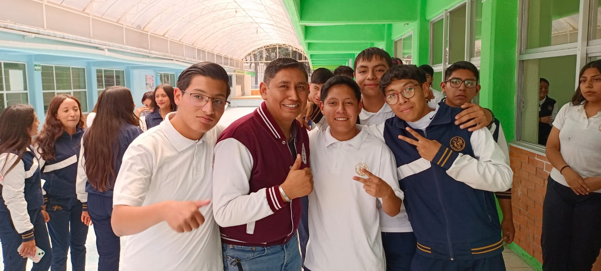
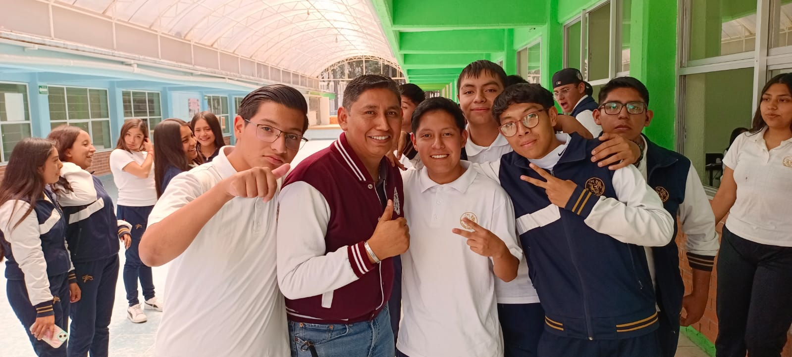

Uno de mis grandes amigos joselongas es super divertido aunque aveces se enoja muy facil, otro de mis grandes amigos es giovani que es cmo en menos menso del grupo, tambien esta ema o mas conocido cmo kidd ema,chico fer una gran perosona que me a enseñado lo que es tener un gran amigo y a quin le pudes confiar cosas no las va a decir y por ultimo askary quien es gran amigo y rival en algunas cuestiones


Esta es la lista de mis demas amigos que no los nombro por cuestiones de que no nos hablamos tanto